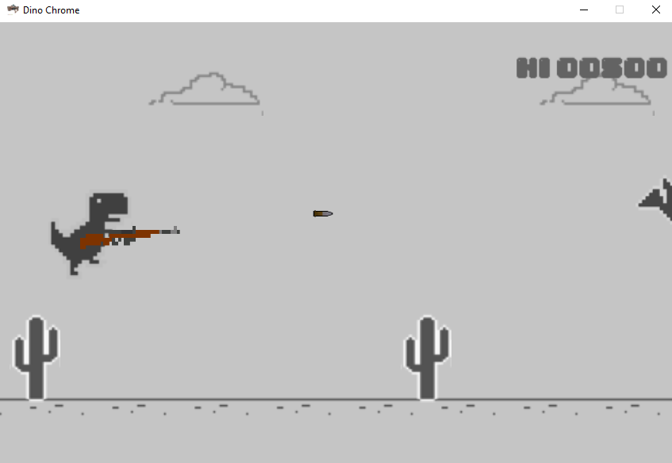
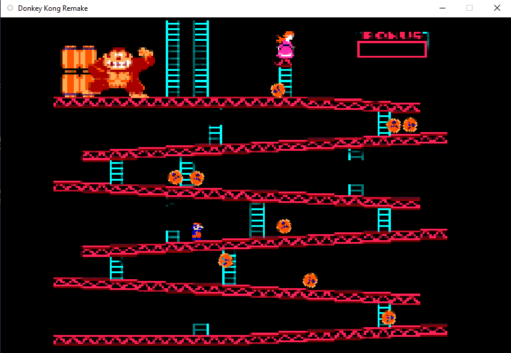
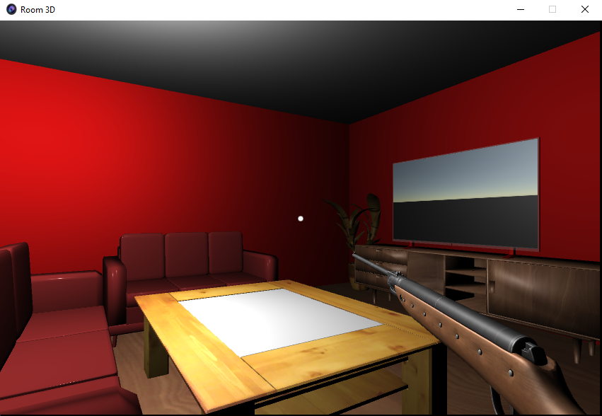

Olá! Eu Sou o Arthur!
Olá! Eu Me Chamo Arthur, moro em Porto Alegre e tenho 15 Anos! Atualmente cursando o Ensino Médio. Estudo linguagens de programação desde os meus 13 Anos! Tenho diversos sonhos e um interesse por sempre Aprender cada vez mais!
Hey! Antes de Descer a Página, Aqui estão 2 formas de você conseguir entrar em contato comigo! ;D
- Número: (51) 98692-8804
- Email: Arthurteixeiramartins310807@gmail.com
- Instagram: Clica Aqui!
Sobre Mim
Bom, Acho que posso dizer que sou Alguém que tem muito fácil aprendizado, E que sempre busca evoluir! Sou uma pessoa que ama conversar, e que está sempre disposta a ouvir!

O Que Eu Gosto De Estudar?
Bom, Eu Descobri que gostava de programar com meus 13 Anos, mas desde novo tinha vontade de criar, por exemplo, Jogos! Comecei com um curso da Internet pra aprender a Logíca de Programação, e depois fui atrás de como eu poderia criar meus próprios jogos!
Logo após dar os primeiros passos, Aprendi com outro curso da Internet a Linguagem C# (CSharp), e comecei a criar Jogos utilizando a Unity!
Depois disso, me interessei mais por outras ferramentas, E no momento sei o Básico de HTML, CSS e JS!
Então se por acaso, Sentir interesse em dar uma olhada no que já fiz, Dá uma olhada no meu Github!

Alguns Exemplos!



O Que eu Gosto De Fazer?
Bom, Eu gosto de Muuuuita coisa! Mas além de programação, Eu Sempre Amei Música! Sempre vi ela como uma forma de se expressar atráves de uma forma que não tenho como descrever! Não é a toa que sempre fui apaixonado em instrumentos!
Outra coisa Que sempre gostei foi de Ler! A Forma como o ser humano é capaz de passar ideias por meios artísticos sempre me chamou a atenção, e justamente a parte Literaria não iria fugir de mim! haha!